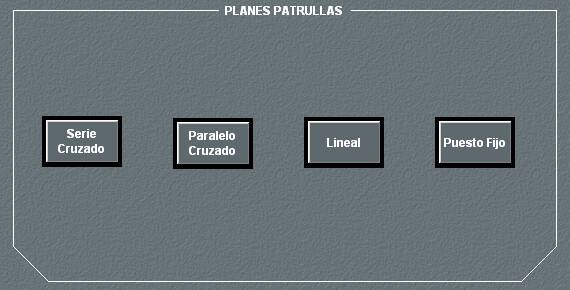
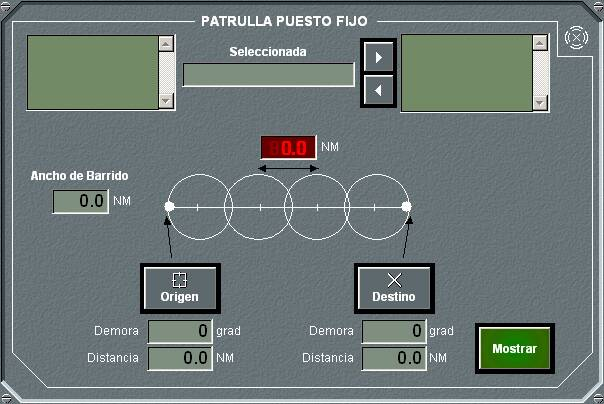
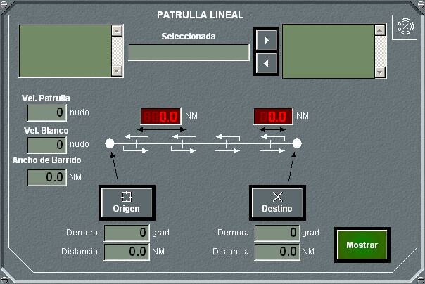
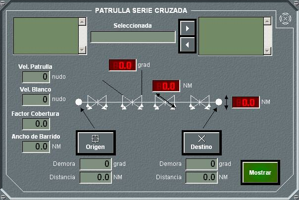
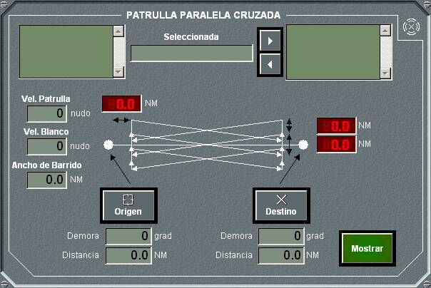

Patrullas

El panel de patrullas permite seleccionar entre cuatro tipos de patrullas: Puesto Fijo, Lineal, Cruzado Serie y Cruzado Paralelo. Pulsando en cada botón se abre el panel de detalle correspondiente al tipo de patrulla seleccionado.
Patrulla Puesto Fijo

En el panel de detalle de patrullas de puesto fijo se pueden realizar las siguientes acciones:
- Seleccionar unidades de la lista de unidades amigas añadirlas a la patrulla, o seleccionar unidades integrantes en la patrulla para eliminarlas de ella.
- Para un plan determinado, introducir los siguientes datos:
- Origen de la patrulla, tomado de la posición del Hook al pulsar el botón Origen, o introducido manualmente.
- Destino de la patrulla, tomado de la posición del Hook al pulsar el botón Destino, o introducido manualmente.
- Ancho de barrido, con el que se calcula y muestra el valor de la separación entre los centros de las circunferencias.
- Trazar el plan en la pantalla táctica, pulsando el botón Mostrar. En la pantalla táctica aparecerá un dibujo como el siguiente, de acuerdo a los datos introducidos en el plan.

Patrulla Lineal

En el panel de detalle de patrullas lineales se pueden realizar las siguientes acciones:
- Seleccionar unidades de la lista de unidades amigas añadirlas a la patrulla, o seleccionar unidades integrantes en la patrulla para eliminarlas de ella.
- Para un plan determinado, introducir los siguientes datos:
- Origen de la patrulla, tomado de la posición del Hook al pulsar el botón Origen, o introducido manualmente.
- Destino de la patrulla, tomado de la posición del Hook al pulsar el botón Destino, o introducido manualmente.
- Velocidad de la Patrulla, Velocidad estimada del Blanco y Ancho de Barrido, con los que se calculan y muestran los valores de la separación entre los centros de las líneas de patrulla y su ancho.
- Trazar el plan en la pantalla táctica, pulsando el botón Mostrar. En la pantalla táctica aparecerá un dibujo como el siguiente, de acuerdo a los datos introducidos en el plan.

Patrullas Cruzadas Serie

En el panel de detalle de patrullas cruzadas serie se pueden realizar las siguientes acciones:
- Seleccionar unidades de la lista de unidades amigas añadirlas a la patrulla, o seleccionar unidades integrantes en la patrulla para eliminarlas de ella.
- Para un plan determinado, introducir los siguientes datos:
- Origen de la patrulla, tomado de la posición del Hook al pulsar el botón Origen, o introducido manualmente.
- Destino de la patrulla, tomado de la posición del Hook al pulsar el botón Destino, o introducido manualmente.
- Velocidad de la Patrulla, Velocidad estimada del Blanco, Factor de Cobertura y Ancho de Barrido, con los que se calculan y muestran los valores de la separación entre los centros de los sectores de patrulla, su ancho y su alto.
- Trazar el plan en la pantalla táctica, pulsando el botón Mostrar. En la pantalla táctica aparecerá un dibujo como el siguiente, de acuerdo a los datos introducidos en el plan.

Patrullas Cruzazas Paralelo

En el panel de detalle de patrullas cruzadas paralelo se pueden realizar las siguientes acciones:
- Seleccionar unidades de la lista de unidades amigas añadirlas a la patrulla, o seleccionar unidades integrantes en la patrulla para eliminarlas de ella.
- Para un plan determinado, introducir los siguientes datos:
- Origen de la patrulla, tomado de la posición del Hook al pulsar el botón Origen, o introducido manualmente.
- Destino de la patrulla, tomado de la posición del Hook al pulsar el botón Destino, o introducido manualmente.
- Velocidad de la Patrulla, Velocidad estimada del Blanco y Ancho de Barrido, con los que se calculan y muestran los valores de la separación entre el origen introducido y el origen efectivo de la patrulla y la diferencia de anchos entre los sectores (“S”).
- Trazar el plan en la pantalla táctica, pulsando el botón Mostrar. En la pantalla táctica aparecerá un dibujo como el siguiente, de acuerdo a los datos introducidos en el plan.